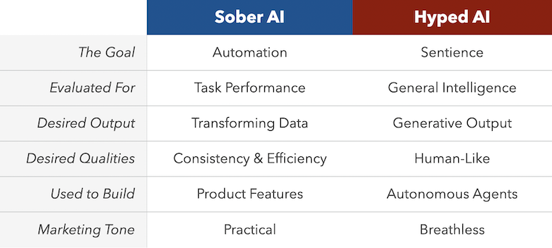

Compound AI Systems
In the blog post, The Shift from Models to Compound AI Systems1, a group of Berkeley AI Researchers note the difference between using Large Language Models (LLMs) as monolithic standalone systems versus using LLMs as components in larger, compound systems that include both LLMs and other technology.
Building on the Berkeley authors definition, Drew Breunig differentiates between what he calls Sober AI verses Hyped AI2 with the insight that most organizations and corporations use LLMs as part of larger enterprise systems.
By leveraging the unique capabilities of LLMs as part of data and machine learning pipelines. He then offers the following table to illustrate these differences:

While we need to evaluate the consequences and ethical implications of using AI in our technologies, the potential of AI to improve our existing processes and functionality should at least be explored with appropriate guardrails in place. These guardrails might include ethical guidelines, data privacy measures, or oversight mechanisms.
Seen within this context, the use of AI is more of continuation and improvement of our technologies and not necessarily a radical departure from what we already do in our efforts to meet the challenges facing libraries.
AI in FOLIO context
Building on the concept of Compound AI systems, AI, particularly LLMs, can be integrated into FOLIO's data pipelines.
In this workshop, we will take a Compound AI approach to explore how AI, particularly LLMs, can be integrated into FOLIO systems. We will:
- Demonstrate how AI can be used as components in FOLIO data pipelines
- Explore how emerging Compound AI techniques can be integrated into existing FOLIO technology
- Discuss practical applications and potential benefits for libraries and their patrons
This approach allows us to leverage the unique capabilities of AI while building upon FOLIO's established infrastructure.